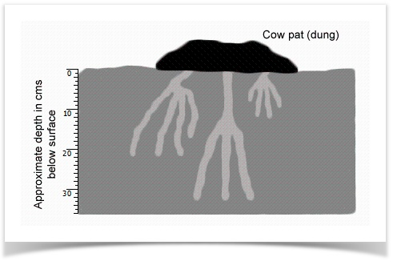

Questions 1-5
Do the following statements reflect the claims of the writer in Reading
Passage 6? In boxes 1-5 on your answer sheet write:
YES if the statement reflects the claims of the
writer
NO
if the statement contradicts the claims of the writer
NOT GIVEN if it is impossible to say what the writer thinks about this
1 Bush flies are easier to control than buffalo flies.
2
Four thousand species of dung beetle were initially brought to Australia by the CSIRO.
3
Dung beetles were brought to Australia by the CSIRO over a fourteen-year period.
4
At least twenty-six of the introduced species have become established in Australia.
5
The dung beetles cause an immediate improvement to the quality of a cow pasture.
Questions
6-8
Label the tunnels on the diagram below. Choose your labels from the box below the diagram.
Write your answers in boxes 6-8 on your answer sheet.
Write your answers in boxes 6-8 on your answer sheet.

| Dung Beetle Types French Spanish Mediterranean South African Australian native South African ball roller. |
Question 9-13
Complete the table below.
Choose NO MORE THAN THREE WORDS OR A
NUMBER from Reading Passage 6 for each answer.
Write your answers in boxes 9—13 on your answer
sheet.
Species |
Size |
Preferred Climate |
Complementary species |
Start of active period |
Number of generations per year |
French |
2.5 cm |
Cool |
Spanish |
Late spring |
1-2 |
Spanish |
1.25 cm |
9 |
|
10 |
1 |
South African ball roller |
|
12 |
13 |
|
|
Click the button to Show/ Hide Answers